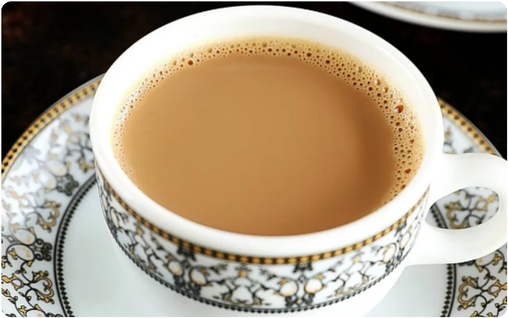
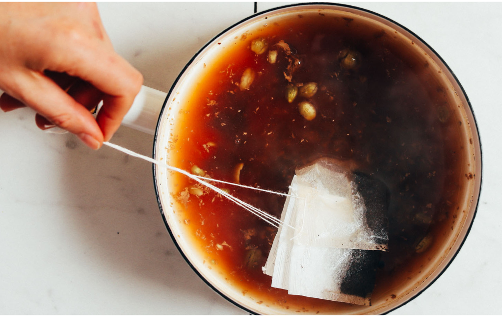
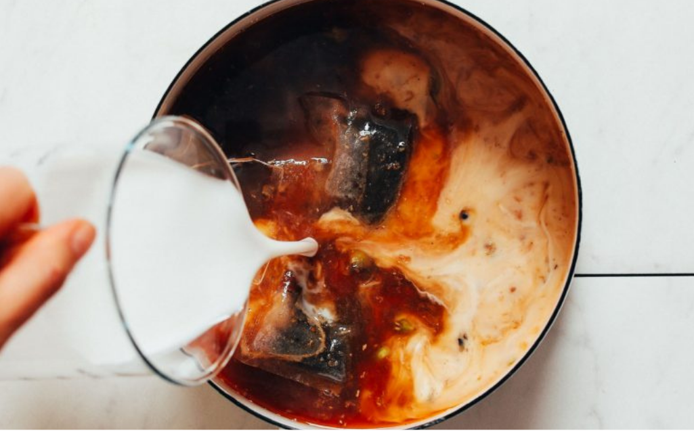
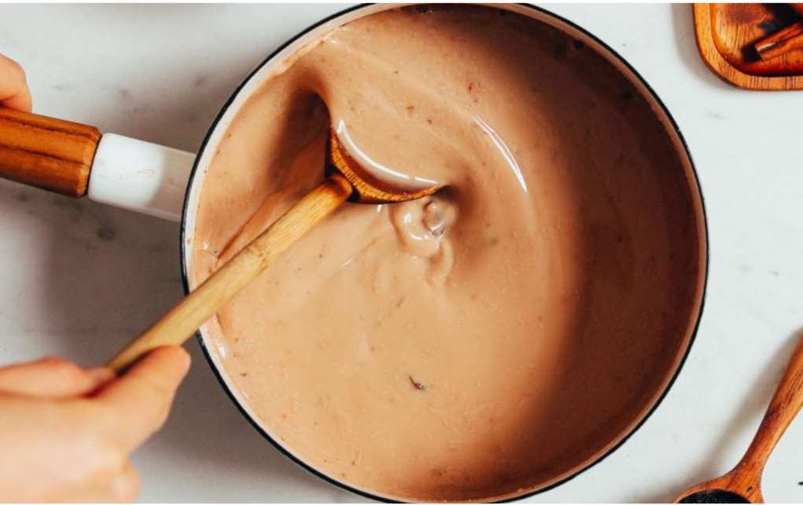

TIME: 20 minutes
SERVINGS: 5
SPECIAL EQUIPMENT: cooking pot, mortar and pestle, mesh strainer
Ingredients
- 1 whole cinnamon stick
- 6-8 green cardamom pods
- 3-4 whole cloves
- 2 ½ cups water
- 2 Tbsp grated ginger
- 3 Tbsp loose leaf black tea
- 2 cups dairy-free milk
- 4 Tbsp sugar
Instructions
- Add cinnamon stick, cardamom pods, and cloves to the bowl of a mortar and use a pestle to slightly crush the spices (not into a powder, just small pieces).
- To a pot, add crushed spices, water, and grated ginger. Bring to a boil over high heat.
- Reduce heat slightly to medium-low and maintain a simmer for 15 minutes or until it reduces by about one-third.
- Add tea and dairy-free milk of choice, lower heat to low, cover, and continue cooking for 5 minutes to allow the flavors to meld.
- Turn off heat and let steep for 5 minutes more (covered) or longer for a deeper flavor.